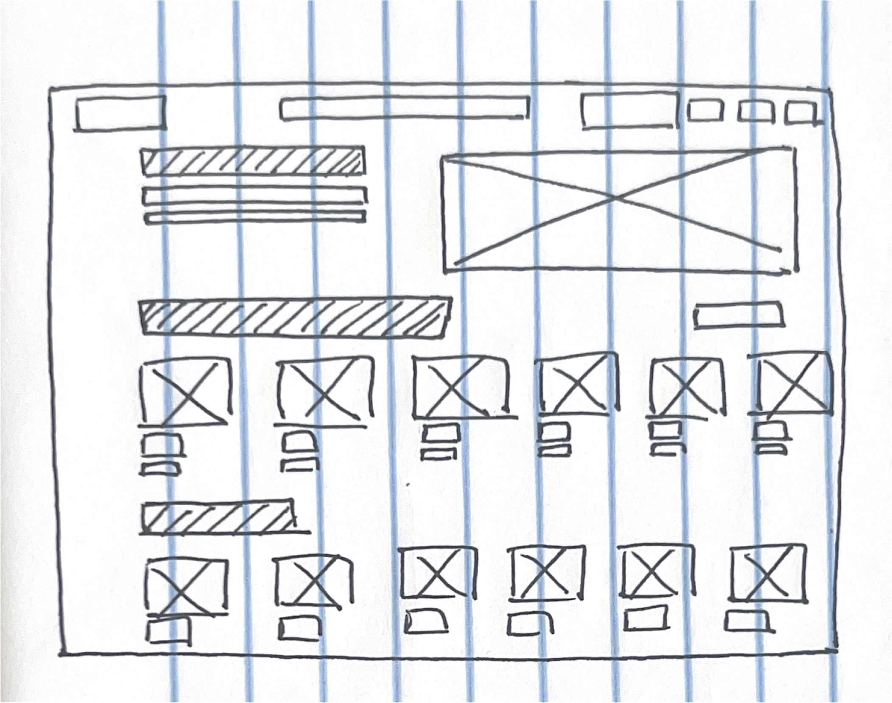
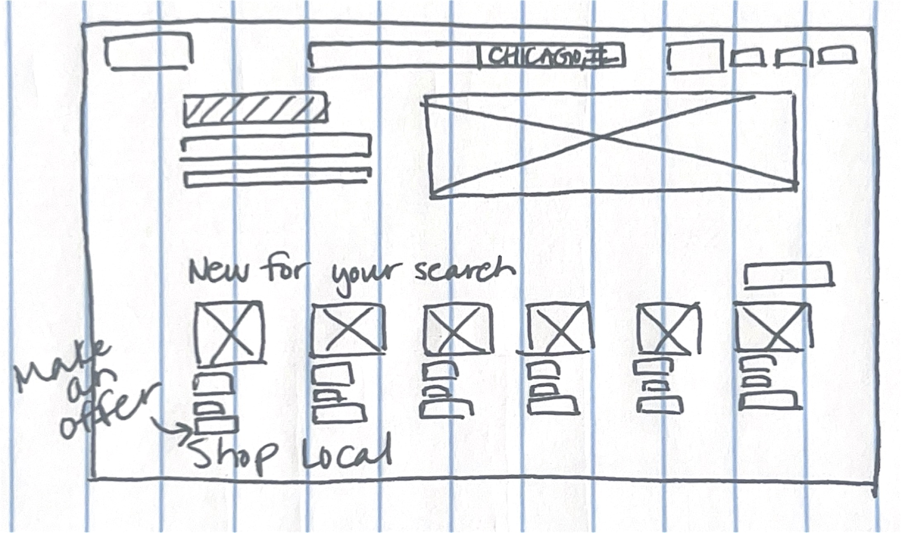

Depop Local: Enhancing Discovery and Negotiation on the Depop Homepage
UX/UI Design Case Study

Overview
Depop's homepage serves as the primary gateway for users to discover unique fashion items and connect with sellers. However, user research revealed challenges in finding local listings and a cumbersome negotiation process. This case study explores my redesign of the Depop homepage, focusing on integrating a location filter within the search bar and implementing a 'Make Offer' button to streamline the buying experience.
Understanding the Problem (Research & Analysis)
User Research Insights
- Users expressed a strong desire to shop locally for potential in-person pickups, reducing shipping costs and fostering community interaction. However, the current homepage lacked a direct way to filter listings by location.
- Buyers found the existing negotiation process, which relied on direct messaging, to be time-consuming and inefficient. They sought a more streamlined way to make offers.
Problem Statement
The absence of a location filter hinders users' ability to find local listings, limiting opportunities for in-person pickups. The lack of a direct offer-making feature creates a tedious negotiation process, impacting transaction efficiency.
Design Process
User Flows
- I mapped out the user flow for both local shopping and offer-making, identifying key touchpoints and areas for improvement. This helped me visualize how the new features would integrate into the existing user journey.
Wireframing
- Low-fidelity wireframes were created to explore different layouts for the search bar and product listings. I experimented with various placements for the location filter and 'Make Offer' button, focusing on usability and accessibility.
- High fidelity wireframes were then created, and tested, to ensure that the user flow was logical and easy to use.
UI Design
- The visual design of the homepage was updated to align with Depop's modern aesthetic. The search bar was redesigned to incorporate a prominent location filter, allowing users to easily specify their desired radius. The 'Make Offer' button was added below each product listing, providing a clear call to action.
- The color of the 'Make Offer' button was chosen to contrast with the background, and to pull the users eye to it.
Design Solutions and Features
Location Filter in Search Bar
- The search bar now includes a dropdown menu that allows users to select their location and specify a search radius. This enables users to easily find listings within their local area.
- This feature will also help to foster local Depop communities.
'Make Offer' Button
- A 'Make Offer' button was added below each product listing, providing a direct way for buyers to propose a price. This streamlines the negotiation process and eliminates the need for direct messaging.
- When a user presses the make offer button, a pop up appears, and the user can type in the price that they would like to offer.
Visual Design


Results and Impact
While this is a conceptual redesign, I anticipate that the location filter will significantly increase the number of local transactions, fostering a stronger sense of community. The 'Make Offer' button is expected to streamline the negotiation process, leading to faster and more efficient sales.
If this design was implemented, A/B testing would be used to measure the success of the new features.
Conclusion
This homepage redesign project highlighted the importance of addressing specific user needs through targeted features. By integrating a location filter and 'Make Offer' button, I aimed to enhance the Depop user experience and create a more efficient and community-driven marketplace.
I learned the importance of creating simple user flows, and how those flows can help to craft a better user experience.
I would like to further test the 'Make Offer' feature, and explore other ways to improve buyer/seller interactions.